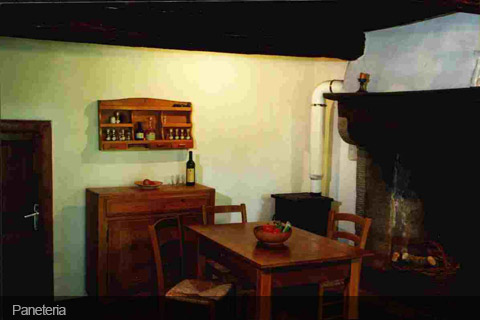

- 
Accomodation
There are 3 self-catering houses, single and doublerooms for travellers available:
Valentina Calzolaio, Paneteria and Sartoria have 2 bedrooms, a kitchen and bathroom each.
Internet access with usb-key.
Make your stay unforgetable: Sleep in the traditional shepard´s card now available!
New in 2011: Natural swimmpond with oekological plant water purification
Valentina Paneteria and Sartoria have open fireplaces and woodstoves for the cold season.
Water comes from the 50m deep well or from the spring on the mountain above with high drinking water quality.
Casa Valentina is surrounded by huge chestnut and oak forests and meadows with a wide variety of fruit trees, such as fig, walnut, olives and cherry.
There is a small shop-cum-bar and restaurant in the village of Portole about 4 km away and also in Teverina in the other direction.
Our prices:
We usually rent from saturday to saturday, but we want you to take advantage of reasonable air tickets. You can choose your convenient arrival day! (minimum stay 10 days)
Reduction of 40 euro is offered for as few as 2 guests in the off season.
Electricity and heating are extra.
Sheets are changed every week. Please bring your own towels.
| Prices per week and up to 4 guests (2011) | Off season (from 04/09) | Peak season (form 22/05 to 04/09) |
|---|---|---|
| Calzolaio | € 430 | € 550 |
| Sartoria | € 430 | € 550 |
| Paneteria | € 430 | € 550 |
Cancellation policy
The purchase of Travelers Cancelation Insurance is recommended. In the event it becomes necessary to cancel your reservation the following policy will be applied.
Cancelations occuring:
- to 75 days prior to reserved date 90% will be refunded.
- 74 to 46 days prior to reserved date 70 % will be refunded
- 45 to 2 days prior to reserved date 20 % will be refunded
- 1 day prior to reserved date 0 % will be refunded
Contacts
For reservation please contact:
- Winfried Salberg
- Via C.S. Teverina 4
- I-52044 Cortona, Italy
- mobile +39 328 4136 301
- Fax: +49 (0)1212 510 895 071
To confirm your reservation send a check for the 20% deposit to the address above. The remainder will be due at least 6 weeks prior to your arrival. (Travel insurance is recommended)
Bank account details
You could also make a transfer to my bank-account
- Sparda München eG, Germany
- BLZ: 700 905 00,
- Winfried Salberg,
- K.Nr.: 141 28 76,
Please use always the following codes:
- IBAN-number: DE20 7009 0500 0001 4128 76
- Bankcode (BIC): GENODEF1S04
- Swift Code: DVBKDEM1